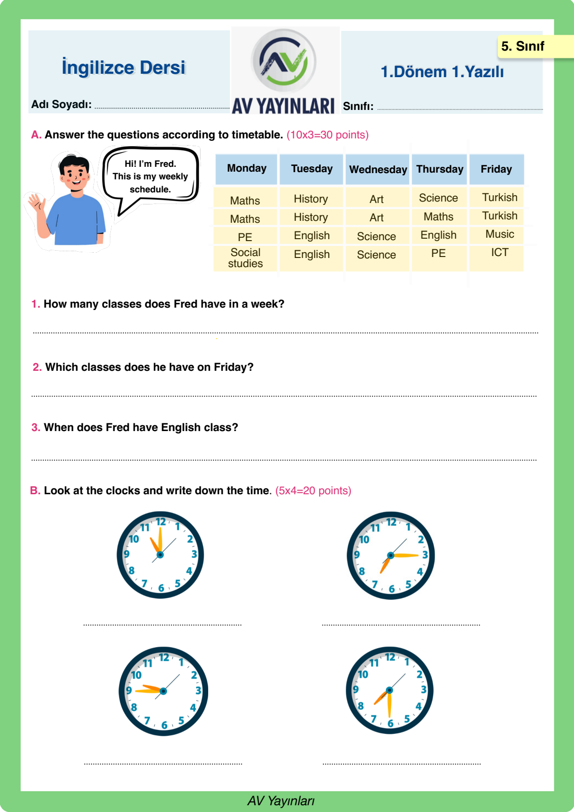
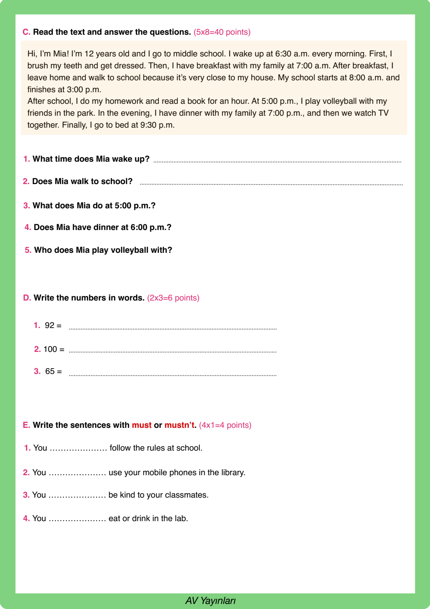
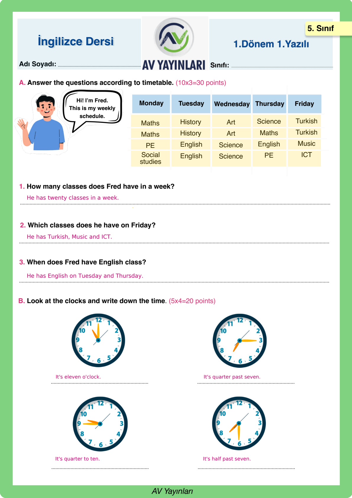
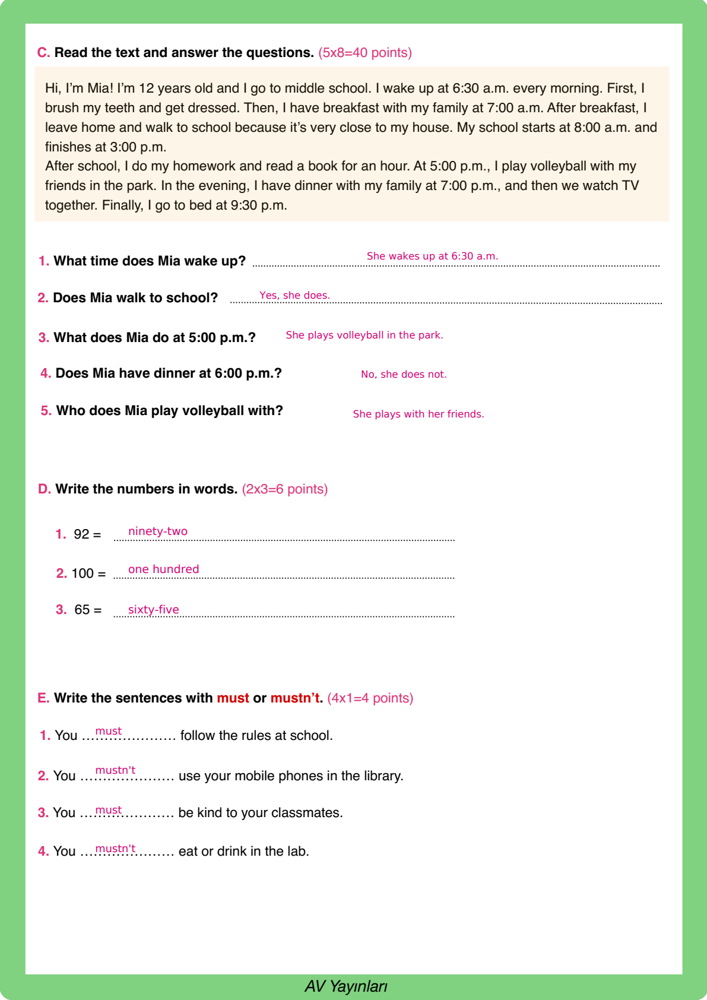

🇬🇧 5. Sınıf İngilizce 1. Dönem 1. Yazılı
School Life • Telling the Time • Daily Routines • Must / Mustn't • Tüm Bölümler A, B, C, D, E
0
Score / 100

Soru A
Fred's Weekly Schedule (Ders Programı)
30 Puan
📌 Öğretmen Çözümü & Model Cevap:
1. How many classes does Fred have in a week?
→ He has 20 classes in a week. (5 days × 4 classes)
2. Which classes does he have on Friday?
→ He has Turkish, Music and ICT (Information and Communication Technology).
3. When does Fred have English class?
→ He has English class on Tuesday and Thursday.
→ He has 20 classes in a week. (5 days × 4 classes)
2. Which classes does he have on Friday?
→ He has Turkish, Music and ICT (Information and Communication Technology).
3. When does Fred have English class?
→ He has English class on Tuesday and Thursday.
Bu sorudan aldığın puan:
Soru B
Telling the Time (Saatleri Yazma)
20 Puan
📌 Öğretmen Çözümü & Model Cevap:
• 1. Saat (11:00): It's eleven o'clock.
• 2. Saat (07:15): It's quarter past seven.
• 3. Saat (09:45): It's quarter to ten.
• 4. Saat (07:30): It's half past seven.
• 2. Saat (07:15): It's quarter past seven.
• 3. Saat (09:45): It's quarter to ten.
• 4. Saat (07:30): It's half past seven.
Bu sorudan aldığın puan:

Soru C
Mia's Daily Routine Reading Text
40 Puan
📌 Öğretmen Çözümü & Model Cevap:
1. What time does Mia wake up?
→ She wakes up at 6:30 a.m. every morning.
2. Does Mia walk to school?
→ Yes, she does. (Because it is very close to her house.)
3. What does Mia do at 5:00 p.m.?
→ She plays volleyball with her friends in the park.
4. Does Mia have dinner at 6:00 p.m.?
→ No, she doesn't. She has dinner at 7:00 p.m.
5. Who does Mia play volleyball with?
→ She plays volleyball with her friends.
→ She wakes up at 6:30 a.m. every morning.
2. Does Mia walk to school?
→ Yes, she does. (Because it is very close to her house.)
3. What does Mia do at 5:00 p.m.?
→ She plays volleyball with her friends in the park.
4. Does Mia have dinner at 6:00 p.m.?
→ No, she doesn't. She has dinner at 7:00 p.m.
5. Who does Mia play volleyball with?
→ She plays volleyball with her friends.
Bu sorudan aldığın puan:
Soru D
Numbers in Words (Sayıların Yazılışı)
6 Puan
📌 Öğretmen Çözümü & Model Cevap:
1. 92 = ninety-two
2. 100 = one hundred (a hundred)
3. 65 = sixty-five
2. 100 = one hundred (a hundred)
3. 65 = sixty-five
Bu sorudan aldığın puan:
Soru E
Must and Mustn't (Zorunluluk ve Yasaklar)
4 Puan
📌 Öğretmen Çözümü & Model Cevap:
1. You must follow the rules at school. (Zorunluluk)
2. You mustn't use your mobile phones in the library. (Yasak)
3. You must be kind to your classmates. (Gereklilik)
4. You mustn't eat or drink in the lab. (Yasak)
2. You mustn't use your mobile phones in the library. (Yasak)
3. You must be kind to your classmates. (Gereklilik)
4. You mustn't eat or drink in the lab. (Yasak)
Bu sorudan aldığın puan:


⏰ 1. Telling the Time
- Tam saatler: It's two o'clock. (Saat 2:00)
- Çeyrek geçe: It's quarter past four. (Saat 4:15)
- Buçuk: It's half past six. (Saat 6:30)
- Çeyrek kala: It's quarter to ten. (Saat 9:45)
🚫 2. Must & Mustn't
- Must: Yapılması zorunlu kurallar. (You must listen to your teacher.)
- Mustn't: Yapılması kesinlikle yasak olanlar. (You mustn't run in the corridors.)